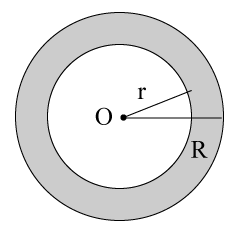

where \( A_1, \ A_2 \) and \( A_3 \) are the areas of base,
side and end faces respectively.
where p is the base perimeter and l is the slant height.
where \( l = \sqrt{h^2 + r^2} \)
\( l = \sqrt{h^2 + (R - r)^2} \)
| Rectilinear Figures/Types | Figure | Perimeter(P) | Area(A) |
|---|---|---|---|
| Any quadrilateral | P = a + b + c + d | \( A = \frac{1}{2} \times d \times (P_1 + P_2) \) | |
| Rectangle | P = 2(l + b) | \( A = l \times b \) | |
| Square | P = 4a = \( 2d \sqrt{2} \) | \( A = a^2 \) | |
| Rhombus | P = 4a = \( 2 \sqrt{d_1^2 + d_2^2} \) | \( A = \frac{1}{2} \times d_1 \times d_2 \) | |
| Trapezium | P = a + b + c + d | \( A = \frac{1}{2} (a + b) \times h \) | |
| Parallelogram | P = 2(a + b) | \( A = b \times h \) | |
| Circle | \( C = 2 \pi r \) (circumference) | \( A = \pi r^2 \) | |
| Semicircle | \( \underset{C = \pi r + 2r}{Circumference} \) | \( A = \frac{1}{2} \pi r^2 \) | |
| Circular Ring |  | - | Area of shaded portion \( A = \pi(R^2 - r^2) \) |
| Name of solid figure | Figure | Surface Area | Volume | ||
|---|---|---|---|---|---|
| Curved/Lateral(C) | Base(B) | Total(S) | |||
| Cuboid | |
2(lh + bh) | lb | 2(lb + bh + hl) | lbh = \( \sqrt{A_1 A_2 A_3} \) where \( A_1, \ A_2 \) and \( A_3 \) are the areas of base, side and end faces respectively. |
| Cube | \( 4a^2 \) | \( a^2 \) | \( 6a^2 \) | \( a^3 \) | |
| Right Prism | Height of Prism \( \times \) Perimeter of base | Depends on the shapes of bases | C \( \times \) 2B | Base area \( \times \) Height | |
| Cylinder | \( 2 \pi r h \) | \( \pi r^2 \) | \( 2 \pi r(r + h) \) | \( \pi r^2 h \) | |
| Pyramid | \( \frac{1}{2} \times p \times l \) where p is the base perimeter and l is the slant height. |
Area of Polygon | C + B | \( \frac{1}{3} \times Base \ area \times Altitude \) | |
| Cone | \( \pi r l \) , where \( l = \sqrt{h^2 + r^2} \) |
\( \pi r^2 \) | \( \pi r(l + r) \) | \( \frac{1}{3} \pi r^2 h \) | |
| Frustum Of Cone | \( \pi(R + r)l \) where, \( l = \sqrt{h^2 + (R - r)^2} \) |
\( \pi R^2 \ or \ \pi r^2 \) | \( \pi l(R + r) + \pi R^2 + \pi r^2 \) | \( \frac{1}{3} \pi h(R^2 + r^2 + Rr) \) | |
| Sphere | \( 4 \pi r^2 \) | - | \( 4 \pi r^2 \) | \( \frac{4}{3} \pi r^3 \) | |
| Hemisphere | \( 2 \pi r^2 \) | \( \pi r^2 \) | \( 3 \pi r^2 \) | \( \frac{2}{3} \pi r^3 \) | |
The area of a triangle whose sides are 9 cm, 12 cm and 15 cm is
Solution:
Here, \( s = \frac{9 + 12 + 15}{2} = 18 \ cm \)
\( \begin{align} \therefore Area = \sqrt{s(s - a)(s - b)(s - c)} \\\\[6pt]
= \sqrt{18(18 - 9)(18 - 12)(18 - 15)} \\\\[6pt]
= \sqrt{18 \times 6 \times 9 \times 3} = 54 \ cm^2 \end{align} \)
The perimeter of a right angled triangle is 12 cm. The hypotenuse is 5 cm, then the area of the triangle is
Solution:
Perimeter = 12 cm
\( \therefore \) a + b + 5 = 12
\( \Rightarrow \) a + b = 7 cm
Also, by Pythagoras theorem, \( a^2 + b^2 = 25 \)
Also \( (a + b)^2 + (a - b)^2 = 2(a^2 + b^2) \)
\( \begin{align} \Rightarrow (a - b)^2 = 2(a^2 + b^2) - (a + b)^2 \\\\[6pt]
= 2(25) - (7)^2 = 50 - 49 = 1 \\\\[6pt]
\Rightarrow a - b = \pm 1 \\\\[6pt]
\therefore a + b = 7 \ and \ a - b = 1 \Rightarrow a + b = 7 \ and \ a - b = - 1 \\\\[6pt]
\Rightarrow a = 4 \ and \ b = 3 \\\\[6pt]
or \ a = 3 \ and \ b = 4 \\\\[6pt]
\therefore \ Area \ of \ triangle = \frac{1}{2} \times 3 \times 4 = 6 \ cm^2 \end{align} \)
The number of 6 m cubes can be cut from a cuboid measuring 36 m \( \times \) 15 m \( \times \) 8 m is equal to
Solution:
Volume of given cuboid = \( 36 \ m \times 15 \ m \times 8 \ m^3 \)
Volume of the cube to be cut = \( 6 \times 6 \times 6 \ m^3 \)
\( \therefore \) Number of cubes that can be cut from the cuboid
\( = \frac{Volume \ of \ the \ cuboid}{Volume \ of \ the \ cube} \)
\( \frac{36 \times 15 \times 8}{6 \times 6 \times 6} = 20 \)
The number of balls each of radius 2 cm can be made by melting a big ball whose radius is 8 cm, is equal to
Solution:
Radius of big ball (R) = 8 cm
\( \therefore \) Volume of big ball = \( \frac{4}{3} \pi R^3 = \frac{4}{3} \pi (8)^3 \)
Radius of small ball (r) = 2 cm
\( \therefore \) Volume of small ball = \( \frac{4}{3} \pi (2)^3 \)
\( \therefore \) Required number of balls
\( = \frac{Volume \ of \ big \ ball}{Volume \ of \ small \ ball} \)
\( = \frac{ \frac{4}{3} \pi (8)^3}{ \frac{4}{3} \pi (2)^3 } = \frac{8 \times 8 \times 8}{2 \times 2 \times 2} = 64 \)